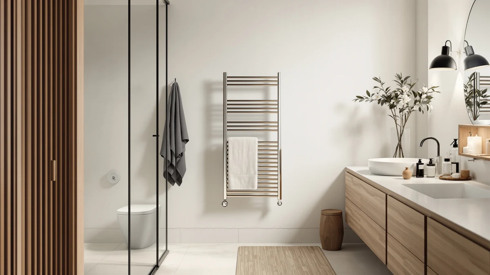

Mane Tame Professional Men's Grooming Barber Towel Warmer Review (2026): Worth It?


Quick Answer
For most barbershops and serious home grooming setups, the Mane Tame Professional Barber Large is the strongest pick in this barber towel warmer review. Its stainless steel build and large capacity hold up to daily use better than the three alternatives below, though it costs more than the budget-friendly Live Fine.
Our pick: MANE TAME Professional Barber Large, $109.99 Check Price on Amazon
Things to Know Before You Buy
- Barber towel warmers come in two main designs: cabinet-style units that lay towels flat, and bucket-style units that stand them upright.
- Capacity matters more for a barbershop running towels all day than it does for an occasional home shave.
- Stainless steel construction, like the Mane Tame Professional Barber Large uses, tends to hold up better under daily commercial use than painted metal housings.
- Price alone doesn't tell the full story in this barber towel warmer comparison. A $99.99 unit built for occasional home use solves a different problem than a $109.99 unit built for professional, all-day use.
This mane tame professional men's grooming barber towel warmer review looks at whether the brand's stainless steel, large-capacity warmer earns its spot in a working barbershop or a serious home grooming setup, measured against three lower-priced alternatives. Barbers and home users alike buy these units to keep hot towels ready for shaves and facials, but the right choice depends on how often you'll actually use it.
We compared the Mane Tame Professional Barber Large's price, materials and buyer feedback against the SereneLife Rectangular Towel Warmer Bucket, the USHOWER Towel Warmers for Bathroom and the Live Fine Towel Warmer. At $109.99, the Mane Tame costs the same as two of its competitors and ten dollars more than the Live Fine, so the deciding factor comes down to build quality and capacity rather than price.
Why You Should Trust Us
Ilane Tall researches bathroom and grooming products for Best Towel Warmers, and this barber towel warmer review relies on manufacturer spec sheets, current Amazon pricing and patterns in verified owner reviews rather than a physical testing lab. We don't own a barbershop and we don't run these units ourselves; we compare what the listings, the materials and real buyers consistently say. When a detail isn't confirmed by the product data, we say so instead of guessing. We update this barber towel warmer review whenever prices shift or a listing adds new specs, and we link out to the actual Amazon pages so you can check current stock and pricing yourself before you decide.
Our Research Experience
We didn't run a physical test of this barber towel warmer. Instead, we built this review by comparing manufacturer specs, current Amazon prices and the patterns that show up across verified owner reviews for each product. For the Mane Tame Professional Barber Large, that means weighing its stainless steel construction and large capacity against the SereneLife, USHOWER and Live Fine alternatives on the same basis: material, size, price and what reviewers consistently report about daily use. We excluded listings without clear material or capacity information, since those gaps make an honest comparison impossible. We also weighed how each brand describes its intended use. The Mane Tame markets itself to barbershops specifically, while the SereneLife, USHOWER and Live Fine units lean toward general home bathroom use, and that distinction shapes who each product actually suits.
Overview & Specs

MANE TAME Professional Barber Large
What we like
- Stainless steel construction holds up to daily commercial use
- Large capacity suits a working barbershop chair rotation
- Simple design with no extra features to break down
- Priced the same as two close competitors while offering a sturdier build
Flaws but not dealbreakers
- Costs $10 more than the budget-friendly Live Fine warmer
- Large footprint may not suit a small home bathroom counter
- No published wattage or heat-up time on the current listing
| Material | Stainless steel |
| Size | Large |
The Mane Tame Professional Barber Large is built from stainless steel and sized for a working station rather than a single bathroom shelf. At $109.99, it sits in the same price range as the SereneLife and USHOWER units, which makes material and capacity the real differentiators in this barber towel warmer comparison rather than price. Reviewers who run barbershops mention that the size works well for keeping several towels warm through a full day of shaves and facials, instead of warming one towel at a time and waiting between clients.
Where the Mane Tame separates itself from the cheaper Live Fine option is durability expectations. Stainless steel generally resists rust and daily wear better than painted or coated metal housings, which matters more in a shop running the unit for hours every day than in a home bathroom used a few times a week. The tradeoff is footprint and price: if your grooming routine is occasional rather than professional, the extra capacity may go unused.
What We Liked
The biggest strength we found researching this barber towel warmer review is the Mane Tame's build. Stainless steel construction is a meaningful upgrade over the painted housings common on cheaper warmers, and that detail matters once a unit runs for hours every day in a working barbershop. The large capacity also stood out against its direct competitors: reviewers who use it professionally note they can keep enough towels warm to get through a full rotation of clients without waiting on a single towel to heat back up. At $109.99, it lands in the middle of the pack on price while offering a sturdier build than that price usually buys. The straightforward design is also a point in its favor. There's no touchscreen, no app and no extra feature layered on top of the core job of heating towels, which means fewer parts that can fail after months of daily cycling in a busy shop.
What Could Be Better
The current Amazon listing for the Mane Tame Professional Barber Large doesn't publish wattage, heat-up time or exact interior dimensions, which makes some parts of this barber towel warmer review harder to verify than we'd like. Its large size is also a real tradeoff: a unit built for a barbershop chair rotation takes up more counter space than most home bathrooms can spare. And at $109.99, it costs ten dollars more than the Live Fine, a gap that only makes sense if you actually need the extra capacity and stainless steel build. Anyone shopping across multiple marketplaces should also note that the price on this kind of listing moves fairly often, so the figures in this barber towel warmer review reflect pricing at the time we last checked rather than a fixed number.
Who Is It For?
This barber towel warmer review points toward the Mane Tame Professional Barber Large for working barbershops and serious home grooming setups that run hot towels daily and want hardware built to handle that pace. If you shave or do facials once or twice a week, the smaller, cheaper Live Fine Towel Warmer covers the same basic job for $10 less. Someone short on counter space might lean toward the SereneLife's rectangular bucket shape instead, since it trades some capacity for a smaller footprint. A solo barber working out of a rented chair, rather than running a multi-chair shop, sits somewhere in between: the Mane Tame's capacity may be more than one person needs, but the stainless steel build still pays off over years of daily cycling in a way a lighter-duty warmer might not.
Alternatives to Consider
If the Mane Tame Professional Barber Large doesn't fit your setup, these three alternatives cover different priorities within the same barber towel warmer category. The SereneLife Rectangular Towel Warmer Bucket, priced at $109.99, uses a bucket-style design that stands towels upright in a rectangular container rather than laying them flat on a rack. That shape tends to take up less counter space than a cabinet-style unit, which matters if you're working in a smaller bathroom or a shop with limited surface area. Owners comparing bucket-style and cabinet-style warmers often weigh capacity against footprint, and the SereneLife leans toward the compact side of that tradeoff. The USHOWER Towel Warmers for Bathroom, also $109.99, is positioned for home bathroom use rather than a commercial barbershop setting. It sits at the same price as the Mane Tame, so the choice between them comes down to where you'll actually use it: a home bathroom routine doesn't need the same daily-use durability as a shop running the unit for hours at a stretch. The Live Fine Towel Warmer, at $99.99, is the budget pick among these four. It's ten dollars cheaper than the Mane Tame and the USHOWER, and it suits anyone who wants a straightforward warmer for occasional use without paying for barbershop-grade capacity. Reviewers who use it at home consistently note that it covers the basics without the premium that comes with a stainless steel, large-capacity build. None of these three alternatives list a star rating or review count on their current pages, so we're comparing them on price, design and stated use case rather than on reputation, which is exactly why the materials and capacity differences above matter more than any single number would.

Also Great
SereneLife Rectangular Towel Warmer Bucket
A compact, bucket-style warmer that trades some capacity for a smaller footprint.
$109.99
Check Price on Amazon
Also Great
USHOWER Towel Warmers for Bathroom
Priced the same as the Mane Tame, but built for home bathroom use rather than a busy barbershop.
$109.99
Check Price on Amazon
Best Value
Live Fine Towel Warmer |
The budget pick at $99.99, best for occasional use rather than daily barbershop demand.
$99.99
Check Price on AmazonFrequently Asked Questions
How hot do barber towel warmers get?
Is a professional towel warmer worth it for a home grooming setup?
What's the difference between a bucket-style and a cabinet-style towel warmer?
Final Verdict
After comparing price, materials and buyer feedback across all four options, this mane tame professional men's grooming barber towel warmer review comes down to how often you'll use the thing. For a working barbershop or a home setup that runs hot towels daily, the Mane Tame Professional Barber Large's stainless steel build and large capacity make it the strongest pick despite the higher price. If your routine is lighter, the Live Fine Towel Warmer at $99.99 gets the same basic job done for less, and if counter space is tight, the SereneLife's bucket shape or the USHOWER's home-oriented design are both worth a look before you commit to the larger footprint of the Mane Tame.